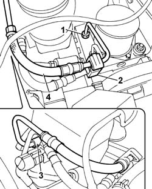

3340B52 pump/central obs pipe - r r
- Path
- Procedures > 33 BRAKING SYSTEM > 3340 ANTI-LOCK BRAKE SYSTEM (ABS) > 3340B ABS SYSTEM PIPES > 3340B52 pump/central obs pipe - r r
- Kind
- repair procedure (removal / refitting; the operation number is the code)
- Applies to
- all engines; all production periods
- Interactive page
- https://sloeber94.github.io/elrnDB-fPnd/en/#/2752763
Applies to: all engines; all production periods
 Removing
Removing
 Refitting
RefittingPlace the car on a ramp.
Remove the protective cap on the brake caliper bleed valve.
Connect the collection system (pipe and reservoir) to the bleed valve on the brake caliper.
Operate the brake pedal until the brake fluid reservoir is empty.
1. Unscrew the ABS rigid pipe connector.
2. Open the retaining clips and release the rigid pipe from the master cylinder to the ABS control unit.
3. Unscrew the rigid pipe connector on the master cylinder.
4. Remove the rigid pipe from the master cylinder to the control unit.

Applies to: all engines; all production periods
Refitting
RemovingFit the rigid brake pipe from master cylinder to ABS control unit.
Tighten the rigid brake pipe connector to the master cylinder.
 | Fastening | Component | Ø | Value (daNm) |
|---|---|---|---|---|
- | Connector | BRAKING SYSTEM FITTING/S | M10 | 1.6 |
Tighten the rigid pipe connector on the ABS control unit to torque.
| Fastening | Component | Ø | Value (daNm) |
|---|---|---|---|---|
- | Connector | ABS CONTROL UNIT RIGID FRONT BRAKE PIPES../ | M10 | 1,6 |
| Fastening | Component | Ø | Value (daNm) |
|---|---|---|---|---|
- | Connector | ABS CONTROL UNIT RIGID FRONT BRAKE PIPES../ | M12 | 1.6 |
Secure the rigid pipes from master cylinder to ABS control unit to the clip.
0010T64 brake and or clutch fluid check level and top up as necessary